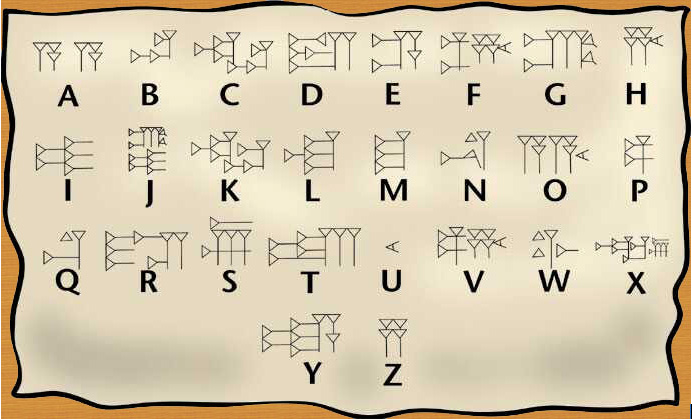

|
Os Sumérios
por Isis Mayara
Rodrigues da Silva
Por
volta de 3500 a.C., os sumérios saíram das montanhas da Ásia Central
à procura de terras férteis e chegaram ao sul da
Mesopotâmia.
Por
ser uma região com poucas chuvas, desde muito cedo os sumérios
tiveram de aprender a desviar e armazenar as águas do Tigre e do
Eufrates, e com isso puderam cultivar uma grande quantidade e
variedade de alimentos.
Com
o tempo foram constituindo cidades. Cada cidade-estado era governada
por um patési, que, além de sumo sacerdote, era o chefe político e
militar.
Segundo as pesquisas os sumérios foram os
inventores da escrita. Eles escreviam em taboas feitas de argila,
usando um estilete de extremidade triangular que deixava sinais em
forma de cunha. Com isso, a escrita recebeu o nome de escrita
cuneiforme.
As
cidades sumérias sempre estavam em guerra entre si, pois eles
queriam estender sua dominação. Isso facilitou a ação dos acádios,
um povo de origem semita que invadiu a região e se fixou ao norte
Suméria.
Economia
Suméria
Os sumerios cultivavam cevada, cebola,
nabo e tâmaras; pescavam ao longo dos rios, e comercializavam alguns
produtos, principalmente na costa mediterrânea, aonde chegavam
navegando ao longo dos rios Tigre e Eufrates, e no Golfo Pérsico,
onde comercializavam com a Índia. Os principais produtos eram pano,
comida, manufaturas e armas, feitas com o cobre e o bronze extraídos
das montanhas.
Religião
Suméria
Os sumérios acreditavam que o Universo
era governado por um panteão formado por um grupo de seres vivos, de
forma humana, porém imortais e possuidores de poderes sobre-humanos.
Esses seres, segundo acreditavam, eram invisíveis aos olhos dos
mortais e guiavam e controlavam o cosmo de acordo com um plano
pré-estabelecido e leis rigorosamente elaboradas.
Os sumérios tinham quatro
divindades fundamentais, conhecidas como deuses criadores. Estes
deuses eram: An, deus do céu; Ki, deusa da terra; Enlil, deus do ar
e Enki, deus da água. Céu, terra, ar e água eram considerados os
quatro componentes mais importantes do Universo. Os deuses concebiam
o me, conjunto de regras e leis universais imutáveis que todos os
seres eram obrigados a obedecer.
Próximas em importância às
deidades criadoras estavam as três divindades celestiais: Nanna,
deus da Lua; Utu, deus Sol e Inanna, rainha dos céus. Inanna era
também deusa do amor, da procriação e da guerra. Nanna era o pai de
Utu e Inanna. Outro deus de grande importância era Ninurta, a
divindade do violento e destrutivo vento sul. Um dos deuses mais
queridos era o deus-pastor Dumuzi; originalmente era um governante
mortal cujo casamento com Inanna assegurou a fertilidade da terra e
a fecundidade procriadora.
Legado dos
Sumérios
Os
Sumérios foram uma das primeiras civilizações de que se tem notícia,
mas a sua importância histórica não pára aí. A eles são atribuídas
duas grandes invenções: a da escrita e a da roda, ambas a cerca de
6000 anos atrás.
A sua escrita era de uso particularmente da
elite, principalmente dos sacerdotes e escribas. Ela era gravada em
tabletes de argila com uma pinça em forma de cunha, e por isso
recebeu o nome de escrita cuneiforme. Já a roda, outra grande
invenção sumeriana, permitiu a eles desenvolverem carros de
combates, que eram puxados por cavalos. Ainda sobre sua arte
militar, eles usavam lanças, ou dardos de combates, além de
armaduras feitas com o bronze extraído das montanhas.
Mas
seu legado não pára por aí. Eles ainda criaram diques e barragens
que impediam enchentes e inundações nas cidades, e ainda escoavam a
água través de canais para as lavouras a fim de expandir mais suas
cidades, que cresciam depressa.
Sua arquitetura
concentrava-se, principalmente, na construção de templos em forma de
pirâmides chamados zigurates. Os zigurates geralmente era usados
para reverenciar algum deus ou rei.
Idioma
Sumério
Falada pelos povos do antigo reino
sumério que viveu na Mesopotâmia. Seu vocabulário, sua gramática e
sua sintaxe não parecem ter relação com nenhuma outra língua
conhecida.
É a língua escrita mais antiga
das que se têm testemunhos gráficos. As primeiras inscrições
procedem de 3000
a.C. e seu alfabeto é cuneiforme. A existência
desta língua, e da cultura que ela revela, permaneceram esquecidas
até o século XIX, quando seu alfabeto foi decifrado. O principal
dialeto sumério foi o emergir ou "língua principesca", embora
houvesse outros de menor difusão, empregados pelas mulheres e pelos
eunucos.
Literatura
Suméria
Literatura escrita em sumério no antigo
reino mesopotâmico de Sumer. É a literatura mais antiga da historia.
Foram encontradas inscrições em escritura cuneiforme em dezenas de
milhares de peças de barro cozido, em selos cilíndricos e tábuas de
argila, bem como em diversos objetos que são inestimáveis como
fontes históricas. Existem muitas obras literárias anteriores ao
século XVIII a.C., como relatos mitológicos, épicos, hinos,
lamentos, provérbios e ensaios.
*
Provérbio Sumério*
"
O pobre está melhor morto do que vivo.
Se tem pão, não tem
sal,
Se tem sal, não tem pão,
Se tem carne, não tem
cordeiro,
Se tem cordeiro, não tem carne."
Queda dos
Sumérios
Declínio dos Sumérios e ascensão dos
Acádios
A constante guerra entre as
diversas cidades-estados sumeriana gerou graves crises econômicas e
militares, que enfraqueceram-nas. Sabendo disso, os Acádios
aproveitaram-se de suas modernas táticas de guerra, que incluíam o
uso do arco e da flecha e de uma agilidade muito superior a de
qualquer exército da época para dominarem a Baixa Mesopotâmia.
O Império de
Sargão
I
Após conquistar a Baixa
Mesopotâmia, Sargão I, rei dos Acádios, tomou para si as regiões do
Elam, do leste da Suméria e parte da costa mediterrânea. Sargão
estabeleceu o primeiro império da história, que durou de 2371 até
2316
a.C. O imperador centralizou muito o poder na
sua pessoa, o que o fez ser idolatrado como um deus. Com sua morte,
o Império Acádio perdeu sua liderança e caiu sob os ataques dos
Gutis, um povo vindo do alto dos Montes Zagros.
Legado
Acádio
Os Acádios não deixaram
nada de muito especial para ser estudado ou comentado pois eles não
eram um povo que destruía a cultura dos povos dominados, muito pelo
contrário, zelava por sua preservação chegando por vezes a adotá-la.
Com isso, seu legado cultural e tudo mais que caracteriza um povo
assemelha-se muito aos Sumérios, não havendo a necessidade de
descrevê-las.
Imagens:

Lista de Deuses feita pelos sumérios a
partir da escrita cuneiforme no século 24 a.C.

Escrita cuneiforme suméria.

*Representação de como se organizavam os
Sumérios

Estandarte de guerra de Ur, 2600-2400
a.C.
Mapa da Antiga Suméria

Mapa atual do antigo território
Sumério

Gudéia, rei de Lagash, o mais retratado dos
monarcas da Idade Antiga. Estátua em diorito (século XXIII
a.C.).Museu do Louvre, Paris.

Representação de como viviam os
sumérios.
Cocina-Cozinha
Habia um pátio central-Havia um pátio
central
Escalera-escada
Azotea-terraço

Estandarte sumério representando os grupos
sociais.Na parte superior, o rei e sua corte.Nas duas partes
inferiores pescadores, agricultores e o povo em geral.

Estatueta
Suméria do templo de Tell Asmar, mostrando um rei em
oração.

Escrita
cuneiforme (Suméria) e sua correspondência com o alfabeto
atual |